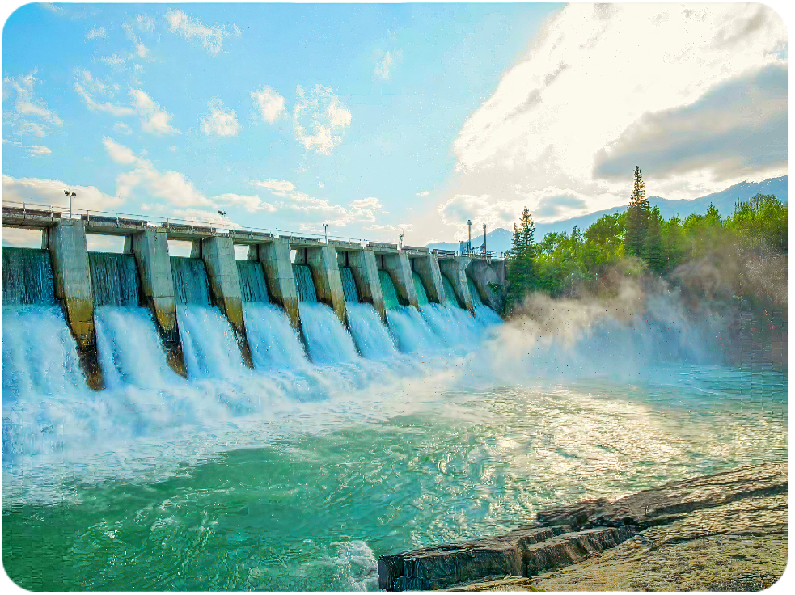

¿Qué es la energía hidráulica?
La energía hidráulica es la energía obtenida del movimiento del agua, generalmente en ríos y embalses, para generar electricidad mediante turbinas y generadores. Es una fuente renovable que aprovecha el ciclo natural del agua.
Ventajas de la energía hidráulica
- Fuente de energía renovable y limpia.
- Bajas emisiones de gases contaminantes.
- Alta eficiencia en la conversión energética.
- Permite el almacenamiento de energía (embalses).
- Contribuye al control de inundaciones y riego.
Desventajas de la energía hidráulica
- Impacto ambiental en ecosistemas acuáticos.
- Desplazamiento de comunidades por construcción de represas.
- Dependencia de la disponibilidad de agua.
- Alto costo inicial de infraestructura.
- Riesgo de sequías que afectan la producción.
Avances tecnológicos en energía hidráulica
La tecnología hidráulica ha evolucionado para ser más eficiente y sostenible. Algunos avances incluyen:
- Turbinas de bajo impacto ambiental.
- Microcentrales hidráulicas para comunidades pequeñas.
- Sistemas híbridos con otras energías renovables.
- Mejoras en la gestión y monitoreo de embalses.
Aplicaciones de la energía hidráulica
- Generación eléctrica: centrales hidroeléctricas grandes y pequeñas.
- Riego agrícola: suministro de agua controlado.
- Control de inundaciones: gestión de caudales y embalses.
- Abastecimiento de agua potable: regulación y almacenamiento.